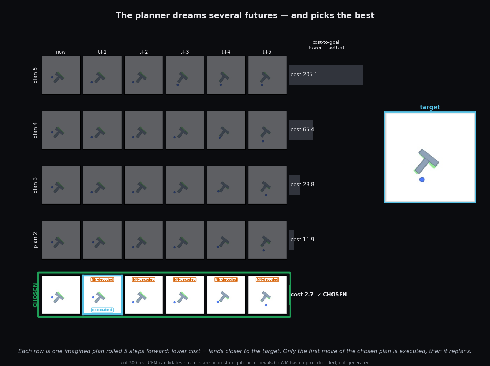
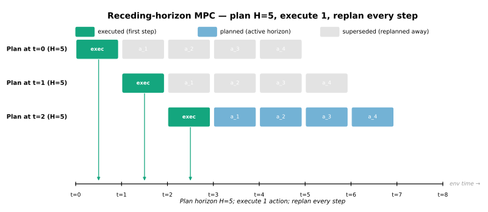
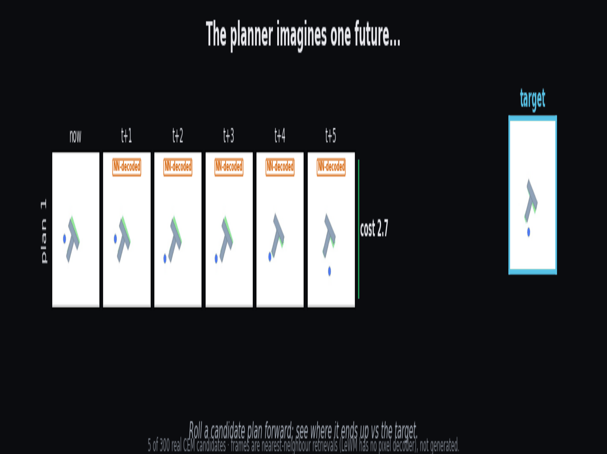
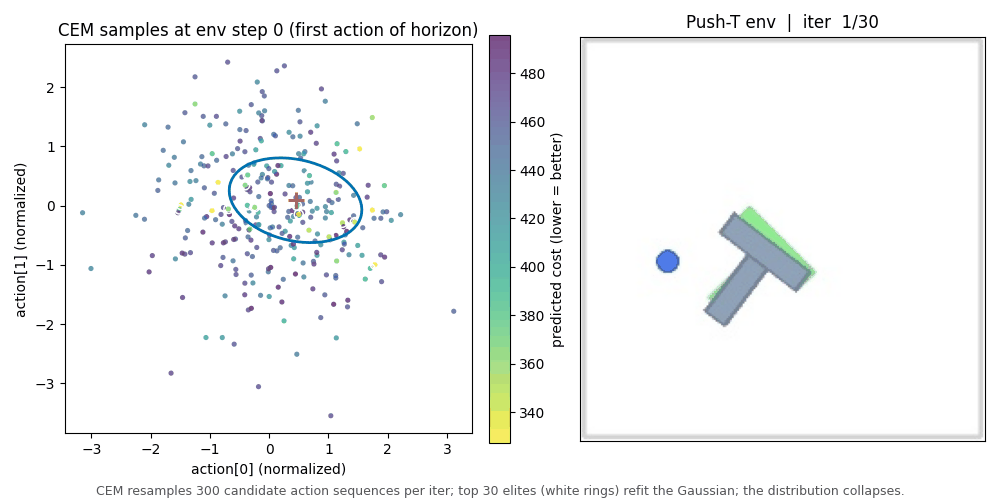
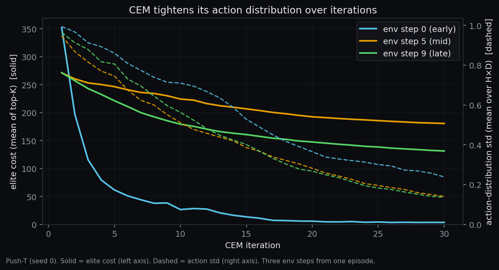

The planner dreams up many futures, then picks one
LeWorldModel has no network that maps "what I see" to "what to do." Every step, it imagines hundreds of possible futures, scores each one, and executes only the best one's first move. Here are five of those imagined futures.

1. The model has no policy — so the planner dreams
There is no network here that turns "what I see" into "what to do." To pick a move, the system has to imagine its options and compare them.
LeWorldModel only predicts. Given a latent (the 192-number code for the current scene) and a move, the predictor returns the next latent. So to act, the system uses the model as a judge of imagined futures: propose short sequences of moves, roll each one forward in the model's head, and keep the sequence that ends closest to the goal.

2. Watch it dream: five candidate futures, one winner
The planner imagines hundreds of possible futures, scores each, and picks the best. Here are five of them, rolled forward and turned back into pictures.
Each row is one real plan the planner sampled, rolled five steps through the predictor, then turned back into frames by NN-decode — for each imagined latent we look up the closest real training frame (retrieval, not generation: these are old images the model is matched against, not pixels it drew). Every row is tagged with how far it ends from the goal. The animation builds the picture up — one plan, then five sorted by cost, then the single winner the system commits to.

3. Breeding better plans
How does it find good plans without trying infinitely many? It breeds them.
Start with a wide cloud of random plans, keep the best handful, make the next batch resemble those, and repeat — the cloud tightens toward good moves. That guess-and-refine search is the CEM-MPC planner (Cross-Entropy Method, used as Model-Predictive Control): sample 300 plans, score them in the model's head, keep the best 30, make the next batch look like those, and repeat 30 times — no gradients, only ranking. Each plan is scored by how close its imagined ending lands to the goal image's latent (there are no pixels to compare, so the distance is measured in the 192-number space).

See the numbers converge

Honestly: distance in this learned 192-number space is not guaranteed to be smooth or to track task progress. The search tolerates that because it never differentiates the score — it only ranks plans. One Push-T step shown; the pattern is consistent across the steps we logged, but treat the exact 100×/4× figures as a representative point, not an average.
4. Replan every step, like GPS rerouting
Why imagine five steps but commit to only one? Same reason GPS recomputes your route constantly instead of trusting one plan from the driveway.
The planner produces a 5-step plan, executes only the first move, re-encodes the new scene, and plans again from scratch (see the loop in §1). The further out it predicts, the more wrong it gets — at five steps ahead the predictor barely beats assuming nothing moves (see the World Model page). Committing to steps 2–5 would mean acting on stale imaginings, so it throws them away and re-dreams from a fresh frame. That is also why the model only has to be accurate near the present: it never executes the shaky far-out part of any plan.
5. The price: 45,000 imaginings per move
All this dreaming isn't free. Here's what a single move actually costs.
Every move runs the small predictor 45,000 times — about 1 second on the RTX 4080 when batched, roughly 60 seconds for a 50-step episode. The encoder runs just once per step. Halving the plans, rounds, or look-ahead roughly halves the cost — and, in the original paper, the success rate too. We did not sweep these knobs.
Under the hood: the world-model ↔ planner interface
The world model and planner share exactly four things: the encoder (pixels → 192 numbers), the predictor ((latent, move) → next latent), the goal latent (the goal image encoded once at episode start), and a single score in latent space. No policy network, no symbolic state, no pixel rendering crosses the boundary.
One env step, start to finish
- Encode the current scene. The environment produces one RGB frame; the encoder turns it into 192 numbers. Cost: 1 encoder pass.
- Start the plan cloud. Mean 0, spread 1.0, over the 5-step look-ahead. The cloud lives entirely in move-space — the world model has no role here.
-
Run 30 refinement rounds. Each round:
- Sample 300 plans from the current cloud.
- Roll each plan 5 steps through the predictor from the current latent. 300 × 5 = 1,500 predictor calls per round.
- Score each plan by total distance from its imagined latents to the goal latent (a pure tensor op, no network call).
- Keep the 30 best plans.
- Refit the cloud to those 30 (new mean, new spread).
- Pick the move. Take the lowest-cost plan's first move.
- Act. Execute that one move; the environment returns a new frame. Discard the other 4 planned moves and loop back.
Cost per env step
| operation | count per env step | where |
|---|---|---|
| Encoder forward (image → 192 numbers) | 1 | step 1 |
| Predictor forward (next latent) | 300 × 5 × 30 = 45,000 | step 3 |
| Score (distance to goal latent) | 300 × 5 × 30 = 45,000 | step 3 |
| Env step (simulator) | 1 | step 5 |
The predictor is small (about 18 million parameters across the whole system), so 45,000 batched calls fit on the 4080 in roughly 1 second of wall-clock per step.
What crosses the interface — and what doesn't
| direction | tensor | shape | when |
|---|---|---|---|
| env → encoder | RGB frame | [3, 224, 224] | once / env step |
| encoder → planner | current latent | [192] | once / env step |
| encoder → planner | goal latent | [192] | once / episode (cached) |
| planner → predictor | latent history + moves | [B, 3, 192] + [B, 3, 10] | 45,000× / env step |
| predictor → planner | predicted next latent | [B, 192] | 45,000× / env step |
| planner → env | first move (2-D push) | [2] | once / env step |
Notice what is absent: no policy-network output, no symbolic state, no pixel reconstructions, no reward during planning. The whole loop reduces to "find the 5-step plan whose imagined ending lands nearest the goal latent."